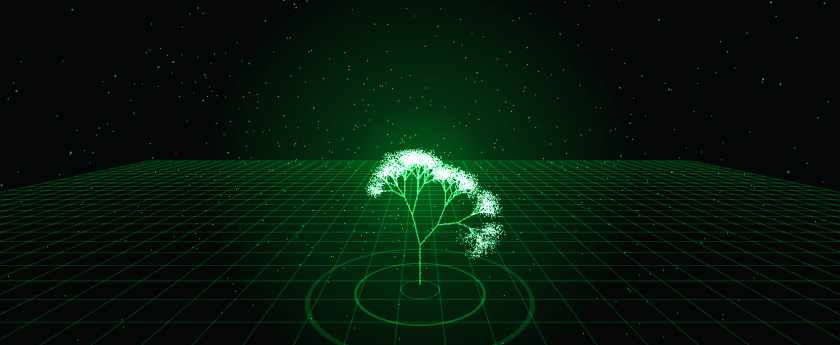
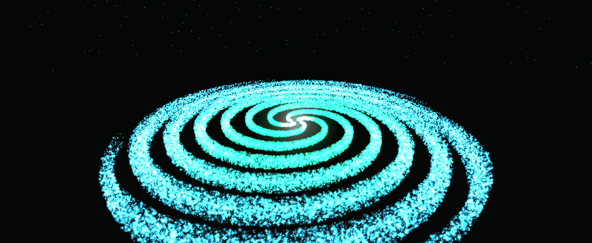
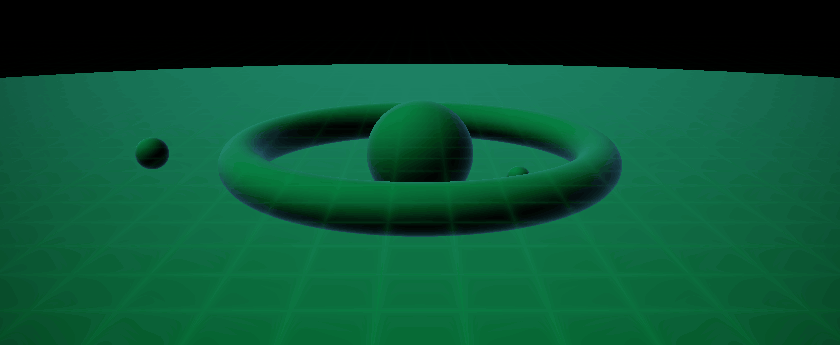
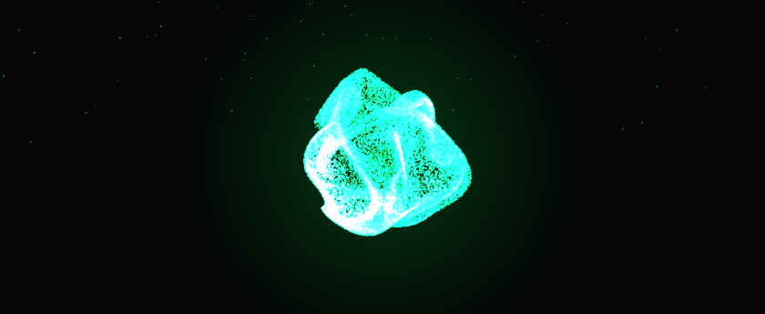
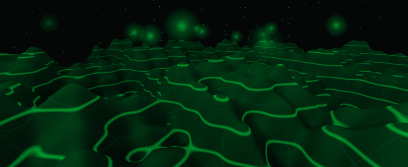
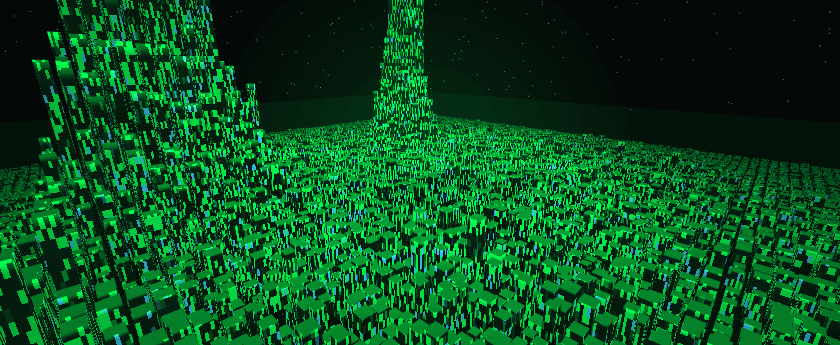
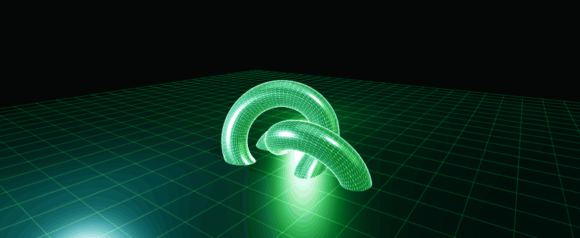
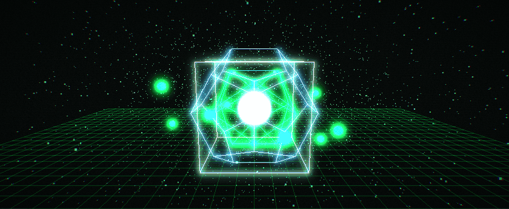

Ocho escenas 3D que se calculan íntegramente dentro de la tarjeta gráfica: nubes de partículas, ray tracing por distancias firmadas, simulación de partículas con ping-pong en texturas flotantes, terreno deformado en el vertex shader, ciudades instanciadas, materiales PBR con sombras y una cadena de post-proceso propia.

Árbol recursivo dibujado como nube de puntos con mezcla aditiva, luciérnagas y anillos de radar.

180 000 estrellas en espiral. La rotación diferencial de los brazos se resuelve en el vertex shader.

Sin geometría: un único shader de fragmento recorre la escena y acumula brillo píxel a píxel.

65 536 partículas simuladas en la GPU con ping-pong de texturas flotantes. El procesador no toca los datos.

Malla plana de 78 400 vértices convertida en cordillera dentro del vertex shader, con curvas de nivel.

8 100 edificios en una sola llamada de dibujo, con ventanas, onda de energía y niebla por fragmento.

Materiales PBR, mapas de sombra de 2048² y entorno prefiltrado con PMREM para reflejos reales.

Seis pases propios: brillo, dos desenfoques gaussianos separables y compuesto con aberración y grano.
Los milisegundos de GPU no son una estimación: se leen con la extensión EXT_disjoint_timer_query_webgl2, que devuelve el tiempo que la tarjeta gráfica dedica de verdad a cada fotograma. Cada consulta abarca una llamada de render completa, incluidos los pases internos (ping-pong de la simulación, sombras y los seis pases del bloom). Cifras tomadas a 949 × 886 píxeles y 120 Hz.
| # | Demo | GPU / fotograma | Draw calls | Geometría | FPS |
|---|---|---|---|---|---|
| 01 | Árbol neón | 0,07 ms | 9 | 5 928 pts · 434 tri | 120 |
| 02 | Galaxia de partículas | 0,20 ms | 3 | 180 000 pts | 120 |
| 03 | Raymarching SDF | 0,48 ms | 1 | 2 tri (todo en el shader) | 120 |
| 04 | Partículas GPGPU | 0,08–0,19 ms | 3 | 66 136 pts | 120 |
| 05 | Terreno procedural | 0,13–0,21 ms | 11 | 155 700 tri | 119 |
| 06 | Ciudad instanciada | 0,24–0,33 ms | 5 (1 para la ciudad) | 97 204 tri | 120 |
| 07 | Visor de modelos | 0,28 ms | 5 | 20 072 tri | 120 |
| 08 | Bloom y post-proceso | 0,18 ms | 1 + 6 pases | 2 tri | 120 |
Los dos documentos técnicos del proyecto, con las mediciones completas y el pipeline de captura.
Cómo se mide con el cronómetro de la tarjeta, capacidades que aprovechan las demos, presupuesto de fotograma, medición por demo, trabajo derivado por segundo y uso real a nivel del sistema operativo.
docs/RENDIMIENTO.mdCómo se renderizan los GIF fotograma a fotograma dentro de la GPU: protocolo entre el arnés y la demo, bucle perfecto por índice de fotograma y ajustes de codificación de FFmpeg justificados con cifras.
docs/PIPELINE.mdMotor compartido, ocho demos comentadas en español, arnés de captura dinámico y licencia MIT. Todo el proyecto vive en GitHub.
github.com/luis06-op/gpu-lab